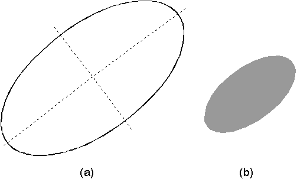

The default values of the current arc parameters are (0,1) (1,0), which define a circle with a radius of one world-coordinate unit (a unit circle).
GpiFullArc Input Parameters
GpiFullArc accepts as input a
multiplier value, so that the size of the full arc is increased or decreased
in relation to the current arc. For example, if the current arc parameters
define an ellipse whose major axis is 20 coordinate units and whose minor
axis is 8 coordinate units, a multiplier of 2 in GpiFullArc
creates an ellipse whose major axis is 40 coordinate units and whose
minor axis is 16 coordinate units.
Because the arc parameters are integers when a fraction is required, for example when rotating an ellipse, greater precision can be obtained by scaling up the required arc parameter values as much as possible, then using a multiplier smaller than 1 to scale the ellipse back down to the required size.
With the default arc parameters defining a circle of 1 world coordinate unit, you can draw a circle of any size by allowing the arc parameters to default, then specifying the radius of the circle with the GpiFullArc multiplier. For example, to draw a circle with a radius of 12 coordinate units, call GpiFullArc with a multiplier of 12 and allow the GpiSetArcParams to default. Since GpiFullArc, like GpiBox, can be used to define a closed figure, it also accepts as input a long value signifying a filled interior. The long value, IControl, can be:
Value
The pattern that fills the interior and other drawing options are controlled by the data structure AREABUNDLE. See Area and Polygon Primitives for detailed information on using areas.

The Full Arc
(a) is a tilted ellipse that is defined by the current arc parameters. (b) is drawn using GpiFullArc with: